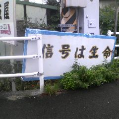

┏━━━━━━┓
┃ 信号は生命┃
┃ ┃
┗━━━━━━┛
である。
一本足で
大地に直立している。
ゆえに
二足歩行で
空間を
移動する事は
構造的に不可能だ。
ヒューマノイド型に
トランスフォームして
暴れまくったり
する事もない。
別の柱へ
ケーブルを伸ばして
そこから
電気エネルギーを
吸収して
生命活動を
維持している。
植物に似ている。
自己増殖は
しない。
自己修復も
できない。
工場で
生産される。
交通量が
増加すると
それに比例して
増殖する。
一つのスポットに
数体の個体が
群れている。
それぞれの個体は
他の個体と
リズムを
同期させている。
目の色を
変えて
人間達へ
意思を伝達
する。
いわゆる
光コミュニケーション
である。